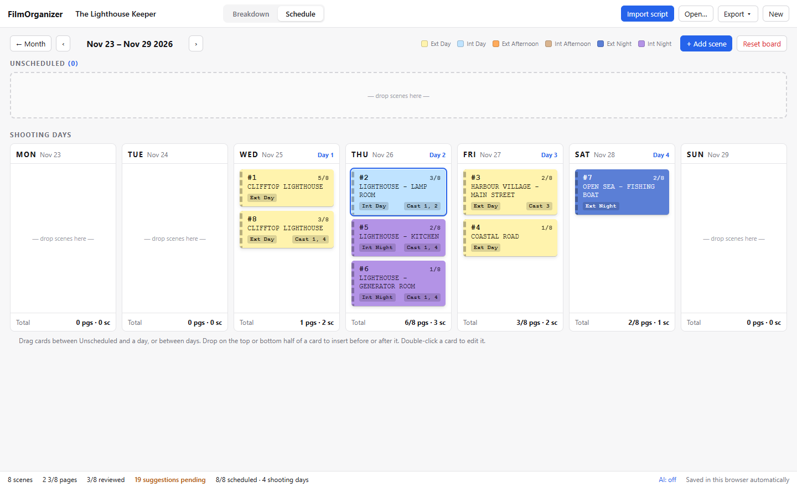
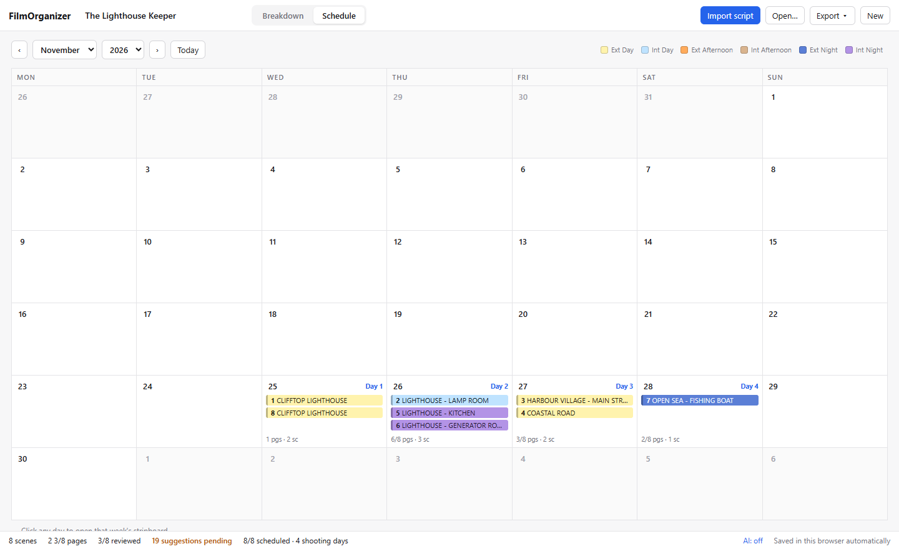

Import any script
PDF, Word, Final Draft, Fountain or plain text. Scene headings, page counts in eighths and speaking characters come straight from the file.
Free · Open source · Works offline
FilmOrganizer turns a screenplay or a creative brief into a scene-by-scene breakdown, a shooting calendar and a stripboard. It runs on your computer, so your script stays with you.
Free · macOS works on Apple silicon and Intel · view the source
Built around how assistant directors and producers already work: breakdown sheets, eighths of a page, story days and a stripboard.
PDF, Word, Final Draft, Fountain or plain text. Scene headings, page counts in eighths and speaking characters come straight from the file.
Built-in rules find cast, props, wardrobe, vehicles, animals, effects and production risks in English and Spanish scripts — no internet, no AI, same result every time.
Plug in Claude, ChatGPT, Gemini or a free local model to catch what is implied but never written. Every suggestion waits for you to accept or reject it.
A commercial brief or treatment without scene headings? The AI proposes the scenes to shoot — locations, Int/Ext, Day/Night, characters and key shots.
Drag strips into shooting days, coloured by Int/Ext and Day/Night, with page and scene totals for every day.
The breakdown, calendar and stripboard as a PDF to share, or as an Excel workbook with a tab for each.
Every scene is a strip. Drag it into a day, reorder the day, and see how many pages and scenes you are asking of the crew before anyone is called.

The calendar numbers your shooting days and shows what is planned for each. Click any day to open its week.

Download it and use it. There is nothing to sign up for and nothing to renew.
Projects are saved locally. A script only leaves your machine if you choose to send it to an AI provider of your own.
The code is public under the MIT licence: read it, change it, build on it — including for your production company.
Pick the installer for your computer from the latest release.
-setup.exe or .msi
First launch: Windows shows “Windows protected your PC”. Click More info → Run anyway.
.dmg — Apple silicon and Intel
First launch: open System Settings → Privacy & Security and click Open Anyway.
.AppImage or .deb
AppImage: allow it to run as a program (Properties, or chmod +x), then open it.
The warning appears because the app isn't signed with a paid certificate. It is shown only once.